| N | Mínimo | Máximo | Média | Mediana | Desvio Padrão |
|---|---|---|---|---|---|
| 60 | -22.01 | 22.47 | 1.4 | 1.74 | 8.17 |
Aplicação de Modelos ARIMA e SARIMA em Séries Temporais
1 Introdução
A análise de séries temporais desempenha um papel fundamental na compreensão de fenômenos econômicos ao longo do tempo, permitindo identificar padrões, tendências e comportamentos sazonais que auxiliam na tomada de decisão. Nesse contexto, modelos estatísticos como o ARIMA (AutoRegressive Integrated Moving Average) e o SARIMA (Seasonal ARIMA) destacam-se por sua capacidade de modelar estruturas temporais, incorporando componentes de tendência, autocorrelação e sazonalidade. Esses modelos são amplamente utilizados para previsão e interpretação de séries econômicas, especialmente quando se busca compreender a dinâmica de indicadores que variam ao longo do tempo sob influência de fatores estruturais e conjunturais.
O consumo nos lares, enquanto indicador-chave do desempenho do varejo alimentar, reflete diretamente o comportamento das famílias frente às condições econômicas. Variáveis como inflação, renda disponível, nível de emprego e expectativas influenciam significativamente os padrões de consumo, que, por sua vez, apresentam forte componente sazonal ao longo do ano. A análise da Taxa de Variação Real do Consumo dos Lares, disponibilizada pela Associação Brasileira de Supermercados (Abras), permite captar essas oscilações, sendo a série devidamente deflacionada pelo Índice de Preços ao Consumidor Amplo (IPCA). Diante da presença de sazonalidade bem definida, a aplicação de modelos SARIMA torna-se adequada para capturar tanto os padrões periódicos quanto os movimentos de curto prazo, contribuindo para previsões mais precisas e uma melhor interpretação do comportamento do consumo.
Por outro lado, a dinâmica da inflação no Brasil pode ser analisada por meio do Índice Nacional de Preços ao Consumidor Amplo (IPCA), principal indicador oficial utilizado no sistema de metas de inflação adotado pelo Banco Central do Brasil desde 1999. O IPCA mede a variação de preços de um conjunto de bens e serviços consumidos pelas famílias com rendimento entre 1 e 40 salários mínimos, abrangendo cerca de 90% das famílias urbanas. A série utilizada neste estudo corresponde à variação acumulada em 12 meses, o que permite observar a evolução da inflação em termos anuais, suavizando flutuações de curto prazo. Diferentemente de séries com forte componente sazonal mensal, essa transformação reduz significativamente a sazonalidade, destacando a tendência e a persistência inflacionária ao longo do tempo. Nesse contexto, modelos ARIMA mostram-se adequados para capturar a estrutura temporal da inflação, especialmente sua inércia e dependência serial.
Diante disso, vem a necessidade de conhecer os modelos estatísticos para modelar e prever adequadamente séries econômicas com características distintas, utilizando ferramentas estatísticas apropriadas, nesse caso o R. Dessa forma, o objetivo dessa análise não é apenas ajustar modelos adequados a cada contexto, mas também evidenciar a importância da escolha metodológica, contribuindo para uma compreensão mais precisa dos fenômenos econômicos e para a geração de previsões confiáveis.
2 Análises
2.1 Série 1: Taxa de Variação Real do Consumo nos Lares (SARIMA)
A Taxa de Variação Real do Consumo nos Lares é um indicador mensal disponibilizado pela Associação Brasileira de Supermercados (ABRAS), deflacionado pelo IPCA. Ela mede a variação percentual mensal do consumo real das famílias nos supermercados brasileiros. Por refletir comportamentos sazonais típicos — como aumento do consumo em dezembro e queda em janeiro —, esta série é um caso clássico para a aplicação do modelo SARIMA.
2.1.1 Análise Descritiva
A série possui 60 observações mensais. A variação vai de -22.01% (quedas acentuadas em janeiro) a 22.47% (picos em dezembro). A média próxima de zero indica que, ao longo do tempo, as variações positivas e negativas se equilibram. O desvio padrão elevado confirma a grande oscilação mensal, característica esperada em séries com forte sazonalidade anual.
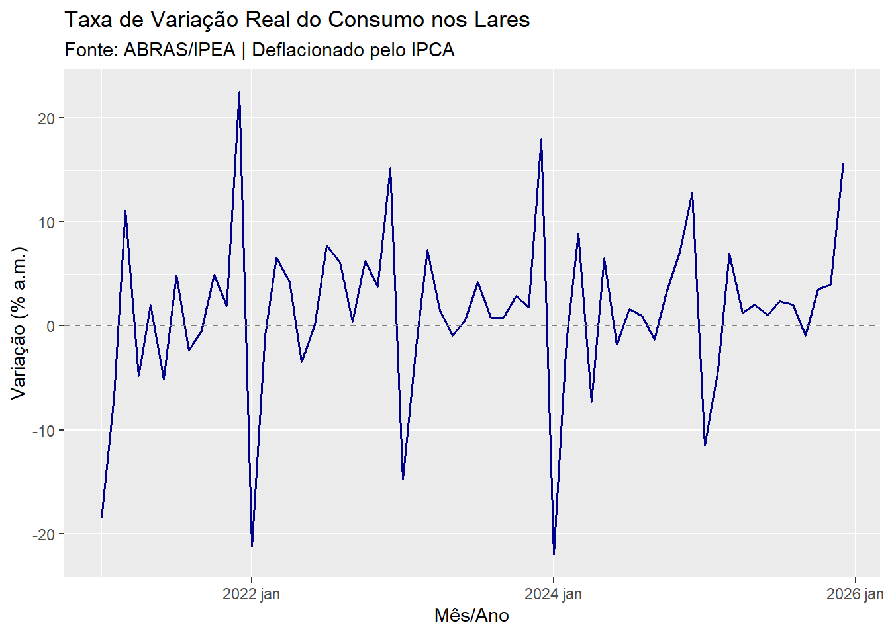
O gráfico evidencia a sazonalidade da série, com picos recorrentes em dezembro — impulsionados pelo 13º salário e pelo maior volume de compras natalinas — e quedas acentuadas em janeiro. Esse padrão se repete a cada 12 meses de forma regular ao longo de todo o período. Não há tendência de longo prazo: a série oscila em torno de zero, sugerindo que o nível médio do consumo real se manteve estável ao longo do tempo.
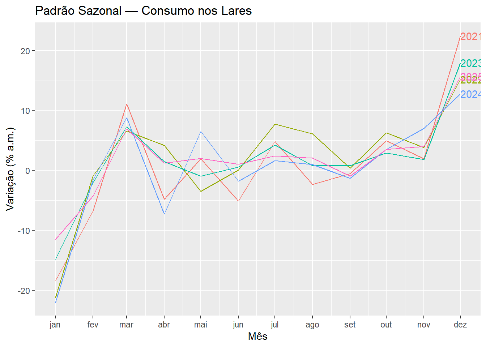
O gráfico sazonal sobrepõe as trajetórias de cada ano, tornando o padrão repetitivo visualmente evidente: dezembro concentra consistentemente os maiores valores, enquanto janeiro concentra as maiores quedas. A regularidade com que esse ciclo se repete a cada 12 meses confirma a presença de forte sazonalidade anual e motiva o uso de modelos SARIMA.
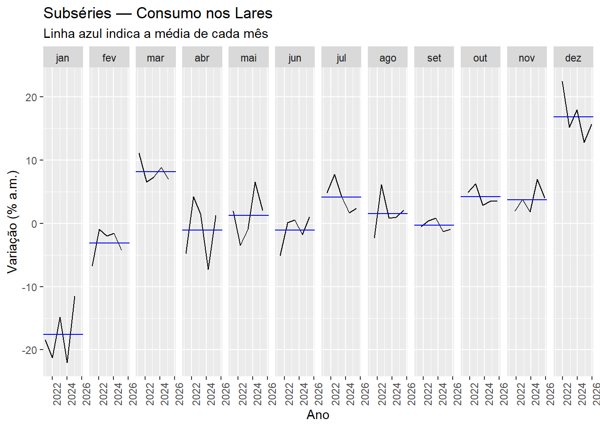
O gráfico de subséries exibe a série de cada mês separadamente ao longo dos anos. A linha horizontal em cada painel representa a média histórica daquele mês. Dezembro apresenta média muito acima de todos os demais meses, enquanto janeiro apresenta média muito abaixo, reforçando a estrutura sazonal de período 12. A relativa estabilidade das médias ao longo dos anos indica ausência de mudança estrutural no padrão sazonal.
2.1.2 Análise da ACF e PACF
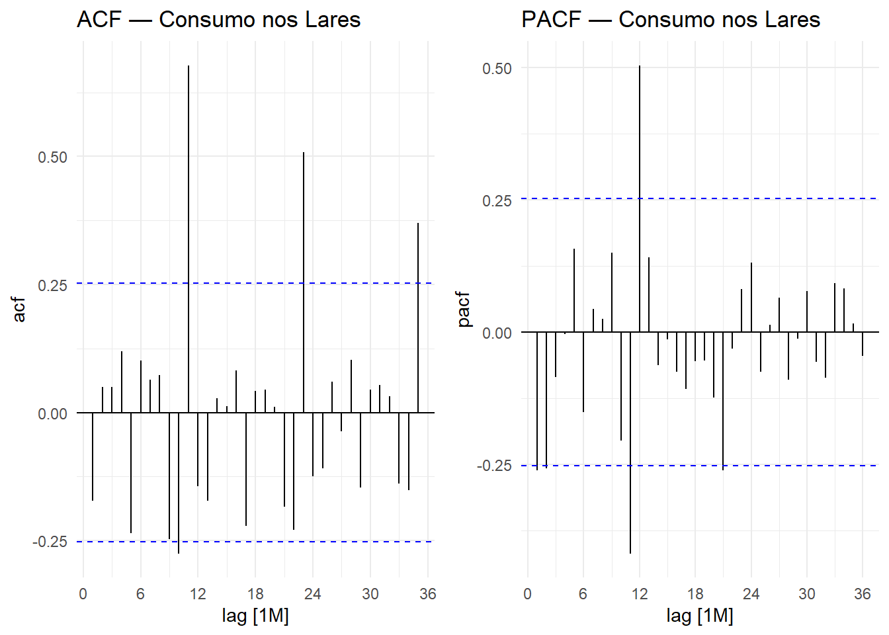
A ACF (Função de Autocorrelação) apresenta picos significativos nos lags múltiplos de 12 (12, 24, 36), confirmando a sazonalidade anual. O padrão oscilatório — em vez de decaimento suave — é típico de séries com componente sazonal dominante. Esse resultado indica a necessidade de diferenciação sazonal (\(D = 1\), \(s = 12\)) antes do ajuste do modelo.
A PACF (Função de Autocorrelação Parcial), que mede a correlação direta entre observações separadas por \(k\) lags controlando os intermediários, exibe pico muito pronunciado no lag 12 e decaimento rápido nos demais, evidenciando forte dependência sazonal direta de ordem 1. Isso sugere a presença de um componente autorregressivo sazonal (\(P = 1\)) na estrutura do modelo.
2.1.3 Teste de Estacionariedade
| kpss_stat | kpss_pvalue |
|---|---|
| 0.2381 | 0.1 |
O teste KPSS (Kwiatkowski-Phillips-Schmidt-Shin) avalia a hipótese nula (\(H_0\)) de que a série é estacionária em torno de uma média ou tendência. Um p-valor \(\leq 0{,}05\) leva à rejeição de \(H_0\), indicando não estacionariedade. O resultado obtido (\(p\text{-valor} = 0{,}10 > 0{,}05\)) indica que não rejeitamos \(H_0\): a série pode ser considerada estacionária em nível, sem tendência determinística significativa (\(d = 0\)).
É importante ressaltar, contudo, que o KPSS detecta tendência, e não sazonalidade. Portanto, mesmo com a série estacionária em nível, a forte estrutura sazonal identificada na ACF e PACF exige a aplicação de diferenciação sazonal (\(D = 1\)) para adequar a série à modelagem SARIMA.
2.1.4 Diferenciação Sazonal
Para remover o padrão sazonal de 12 meses, aplica-se a diferenciação sazonal (\(D = 1\), \(s = 12\)). Como o teste KPSS não indicou necessidade de diferenciação regular, mantemos \(d = 0\).
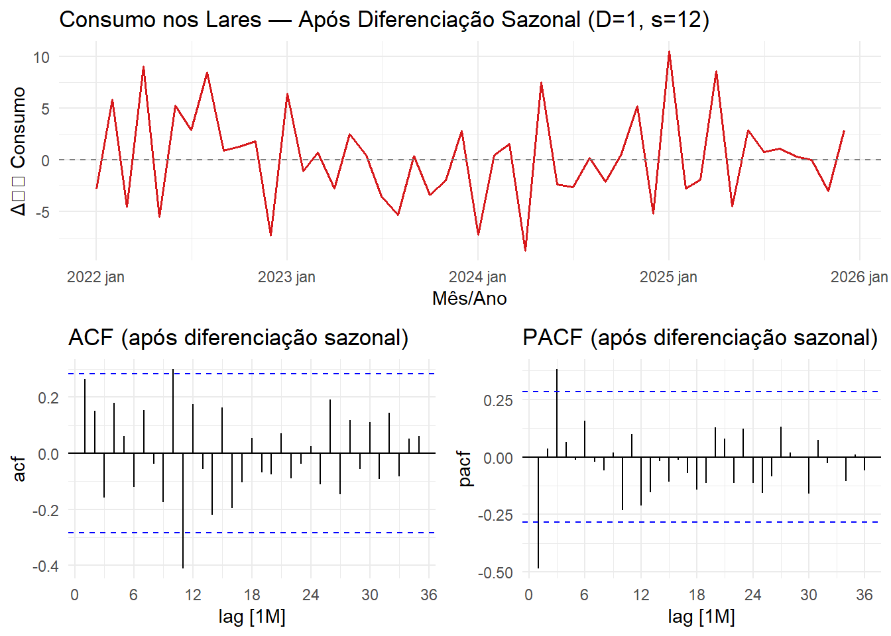
Após a diferenciação sazonal (\(D = 1\), \(s = 12\)), a série passa a oscilar em torno de zero com variância aproximadamente constante e sem padrão sazonal visível, comportamento consistente com estacionariedade.
Na ACF diferenciada, picos nos primeiros lags e no lag 12 sugerem componente MA(1) não sazonal e MA(1) sazonal (\(Q = 1\)). Na PACF diferenciada, o pico mais relevante ocorre no lag 1, sugerindo a presença de componente AR(1) não sazonal (\(p = 1\)). O lag 12 da PACF, com pico significativo, reforça o componente AR sazonal (\(P = 1\)) já identificado anteriormente. Esses padrões orientam a especificação dos candidatos SARIMA.
2.1.5 Teste KPSS Após Diferenciação Sazonal
| kpss_stat | kpss_pvalue |
|---|---|
| 0.1605 | 0.1 |
Após a diferenciação sazonal, o p-valor obtido é \(> 0{,}05\), confirmando que não rejeitamos \(H_0\) de estacionariedade. A série diferenciada sazonalmente é, portanto, estacionária, o que valida o uso de \(d = 0\) e \(D = 1\) no modelo SARIMA. Não há necessidade de aplicar diferenciação regular adicional.
2.1.6 Separação Treino e Teste
Período de treinamento: 2021 jan a 2024 out Período de teste: 2024 nov a 2025 dez Observações treino: 46 | Observações teste: 14 Os dados são divididos em conjunto de treino — utilizado para estimar os parâmetros dos modelos — e conjunto de teste — reservado exclusivamente para avaliação das previsões fora da amostra. Os meses finais da série compõem o conjunto de teste, simulando uma situação real de previsão em que os valores futuros são desconhecidos no momento do ajuste.
2.1.7 Ajuste e Comparação de Modelos SARIMA
Com base na análise da ACF e PACF da série diferenciada sazonalmente, foram especificados manualmente sete modelos candidatos SARIMA\((p, d, q)(P, D, Q)_{12}\) e incluída a seleção automática por busca exaustiva como referência.
| .model | sigma2 | log_lik | AIC | AICc | BIC |
|---|---|---|---|---|---|
| sarima002_110 | 13.900 | -92.389 | 192.778 | 194.157 | 198.883 |
| auto | 13.900 | -92.389 | 192.778 | 194.157 | 198.883 |
| sarima100_110 | 14.675 | -93.869 | 193.737 | 194.537 | 198.316 |
| sarima300_110 | 14.254 | -92.163 | 194.327 | 196.470 | 201.958 |
| sarima101_110 | 15.012 | -93.696 | 195.392 | 196.772 | 201.498 |
| sarima001_110 | 15.613 | -95.008 | 196.015 | 196.815 | 200.594 |
| sarima100_011 | 13.270 | -96.692 | 199.383 | 200.211 | 203.873 |
A comparação dos modelos foi realizada com base no AICc (Critério de Informação de Akaike corrigido para amostras finitas), que penaliza a complexidade do modelo e favorece estruturas mais parcimoniosas. A tabela acima está ordenada do melhor (menor AICc) para o pior candidato.
O modelo SARIMA(0,0,2)(1,1,0)\(_{12}\) apresentou os menores valores de AIC, AICc e BIC, sendo identificado tanto pela seleção automática quanto pela comparação manual como a estrutura mais adequada. Ele incorpora dois termos de média móvel não sazonal (\(q = 2\)) para capturar dependências de curto prazo, além de um componente autorregressivo sazonal (\(P = 1\)), refletindo a influência do consumo observado no mesmo mês do ano anterior. A diferenciação sazonal (\(D = 1\)) mostrou-se suficiente para tornar a série estacionária, sem necessidade de diferenciação regular.
Alguns modelos especificados manualmente retornaram <NULL model>, indicando falha de convergência ou inadequação estrutural aos dados, o que reforça a importância de combinar a análise dos correlogramas com a comparação por critérios de informação.
2.1.8 Diagnóstico dos Resíduos
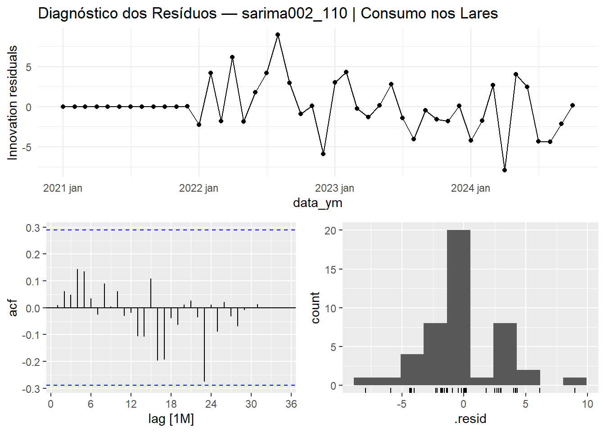
O diagnóstico dos resíduos do modelo SARIMA\((0,0,2)(1,1,0)_{12}\) avalia se o modelo capturou toda a estrutura temporal da série.
| .model | lb_stat | lb_pvalue |
|---|---|---|
| sarima002_110 | 19.9062 | 0.5889 |
O teste de Ljung-Box avalia formalmente a hipótese nula (\(H_0\)) de que os resíduos são não autocorrelacionados até o lag 24. O p-valor obtido é \(> 0{,}05\), portanto não rejeitamos \(H_0\): os resíduos não apresentam autocorrelação residual significativa, confirmando que o modelo capturou toda a estrutura temporal da série. O resultado valida o modelo SARIMA\((0,0,2)(1,1,0)_{12}\) como adequado para descrever a dinâmica do consumo nos lares.
2.1.9 Previsão
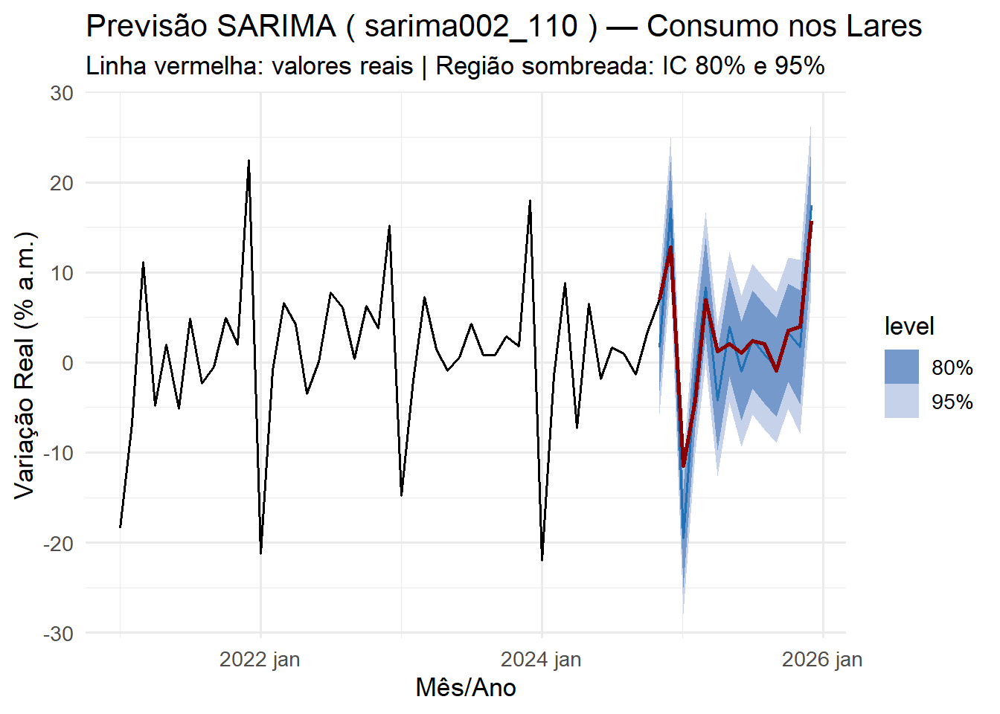
O gráfico compara as previsões geradas pelo modelo SARIMA com os valores efetivamente observados no conjunto de teste (linha vermelha). O modelo preserva o padrão sazonal esperado: as previsões reproduzem corretamente a queda em janeiro e o pico em dezembro. Os valores reais encontram-se majoritariamente dentro dos intervalos de confiança de 80% e 95%, indicando boa calibração do modelo.
| .model | RMSE | MAE | MAPE | MASE |
|---|---|---|---|---|
| sarima002_110 | 3.4565 | 2.6354 | 82.7633 | 0.7459 |
As métricas de acurácia confirmam o desempenho do modelo no conjunto de teste.
2.2 Série 2: IPCA — Taxa de Variação Acumulada em 12 Meses (ARIMA)
O IPCA (Índice de Preços ao Consumidor Amplo) é calculado mensalmente pelo IBGE e constitui o indicador oficial da inflação brasileira, utilizado pelo Banco Central para o regime de metas de inflação. A série analisada corresponde à taxa de variação acumulada em 12 meses (% a.a.), disponibilizada pelo Ipea, com registros a partir de julho de 1994. Ela captura a intensidade inflacionária em cada momento, incorporando os efeitos de choques de oferta, políticas monetárias e câmbio. A análise se concentra no período pós-Plano Real (a partir de julho de 1994), quando a série passa a apresentar comportamento mais estável e adequado à modelagem por ARIMA.
2.2.1 Preparação dos Dados
Período analisado: 1994 jul a 2026 fev Total de observações: 380 2.2.2 Análise Descritiva
| N | Mínimo | Máximo | Média | Mediana | Desvio Padrão |
|---|---|---|---|---|---|
| 380 | 1.65 | 4005.08 | 45.5 | 5.92 | 306.77 |
A análise descritiva evidencia importantes características da série. A média é substancialmente superior à mediana, indicando forte assimetria positiva. A distribuição é puxada para cima por valores extremamente altos no início do período, correspondentes à inflação elevada logo após o Plano Real. O máximo superior a 4000 reforça essa evidência, ao passo que o desvio padrão elevado reflete a grande dispersão causada por esses extremos históricos. Após a estabilização monetária, o comportamento da série se torna consideravelmente diferente, com inflação oscilando em níveis bem mais baixos, o que justifica a atenção especial ao tratamento dos valores iniciais nas etapas seguintes.
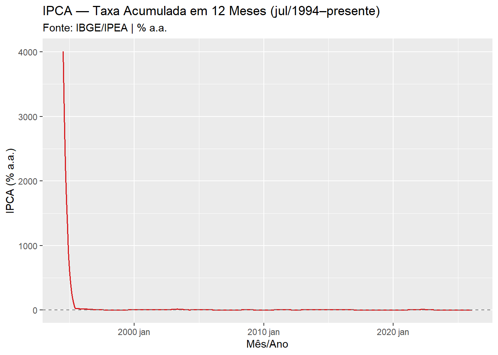
A série revela uma queda abrupta nos níveis de inflação no início do período, correspondente ao impacto do Plano Real na estabilização econômica. Após essa transição, a série passa a oscilar em torno de níveis significativamente mais baixos e relativamente estáveis. Não se observa padrão sazonal regular ao longo do tempo, em razão da transformação acumulada em 12 meses, que suaviza as variações mensais. Nota-se, porém, certa persistência inflacionária, pois a série tende a permanecer elevada por períodos prolongados antes de recuar, e vice-versa, que é uma característica de inércia inflacionária e justifica o uso de modelos ARIMA para capturar essa dependência temporal.
2.2.3 Análise da ACF e PACF
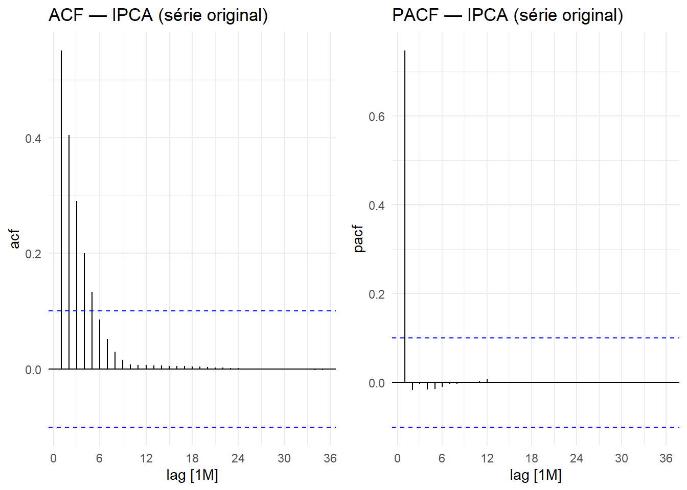
A ACF apresenta decaimento extremamente lento e persistente, com autocorrelações significativas por dezenas de lags. Esse é o padrão clássico de não estacionariedade: a série possui memória longa, com observações altamente correlacionadas com suas versões defasadas mesmo em horizontes distantes — comportamento típico quando há tendência ou persistência de longo prazo.
A PACF exibe um pico muito pronunciado no lag 1 seguido de decaimento rápido. Esse padrão sugere que, após a diferenciação, a estrutura de dependência residual pode ser bem descrita por um componente AR(1): a observação de um período é fortemente influenciada pela imediatamente anterior, mas a correlação direta desaparece rapidamente para lags maiores.
2.2.4 Teste de Estacionariedade
| kpss_stat | kpss_pvalue |
|---|---|
| 0.559 | 0.0284 |
O teste KPSS aplicado à série original resulta em p-valor \(< 0{,}05\), levando à rejeição de \(H_0\) de estacionariedade. Mesmo visualmente a série exibir certa estabilidade após o Plano Real, a presença dos valores iniciais muito elevados e a persistência inflacionária tornam a série globalmente não estacionária. Isso confirma a necessidade de diferenciação antes do ajuste do modelo ARIMA.
2.2.5 Diferenciação
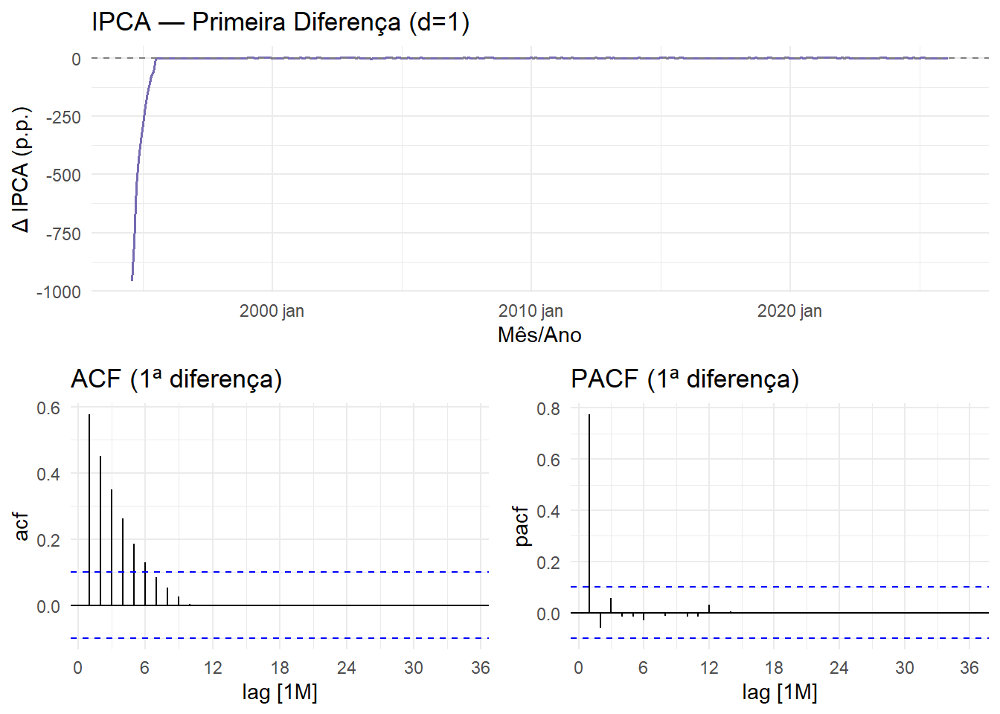
Após a primeira diferença (\(d = 1\)), a série passa a oscilar em torno de zero com amplitude mais controlada, indicando remoção da tendência de longo prazo. No entanto, o início da série ainda apresenta variações muito bruscas, reflexo dos valores extremos do período imediatamente pós-Plano Real, que persistem como influência na série diferenciada.
Na ACF diferenciada, observa-se corte relativamente abrupto após os primeiros lags, sem picos sazonais evidentes, sugerindo um processo de baixa ordem, possivelmente MA(1) ou MA(2). Na PACF diferenciada, pico no lag 1 com decaimento rápido reforça a hipótese de AR(1) ou AR(2) após a diferenciação. A ausência de padrão sazonal nos correlogramas confirma que o modelo adequado é ARIMA, sem componente sazonal explícito.
2.2.6 Teste KPSS Após Diferenciação
| kpss_stat | kpss_pvalue |
|---|---|
| 0.5845 | 0.024 |
O teste KPSS aplicado à série diferenciada ainda resulta em p-valor \(< 0{,}05\), levando à rejeição de \(H_0\). Isso indica que a primeira diferenciação não foi suficiente para tornar a série completamente estacionária. Esse resultado é fortemente influenciado pelos valores extremos no início da amostra — os choques inflacionários do início do Plano Real — que geram variações abruptas na série diferenciada e impedem o estabelecimento de um comportamento estacionário global. Essa limitação motivará o uso de abordagens complementares, como o tratamento de outliers, nas etapas seguintes.
2.2.7 Separação Treino e Teste
Período de treinamento: 1994 jul a 2024 dez Período de teste: 2025 jan a 2026 fev Observações treino: 366 | Observações teste: 14 Os dados são divididos em treino (até dezembro de 2024) e teste (janeiro de 2025 em diante), seguindo a mesma lógica de avaliação fora da amostra adotada para a série de consumo.
2.2.8 Ajuste e Comparação de Modelos ARIMA
Com base na análise dos correlogramas da série diferenciada, foram especificados seis modelos candidatos ARIMA\((p, d, q)\) e incluída a seleção automática como referência.
| .model | sigma2 | log_lik | AIC | AICc | BIC |
|---|---|---|---|---|---|
| auto | 60.553 | -1266.187 | 2546.375 | 2546.689 | 2573.655 |
| arima_210 | 77.545 | -1311.676 | 2635.353 | 2635.587 | 2658.752 |
| arima_012 | 713.559 | -1718.811 | 3447.623 | 3447.790 | 3467.122 |
| arima_110 | 0.115 | -134.096 | 3467.571 | 3467.739 | 3487.071 |
| arima_111 | 0.115 | -134.022 | 3469.425 | 3469.660 | 3492.824 |
| arima_011 | 0.133 | -160.747 | 3520.874 | 3521.041 | 3540.373 |
| rw_drift | 6336.158 | -2113.514 | 4237.029 | 4237.196 | 4256.528 |
A tabela compara os modelos candidatos pelo AICc, do melhor para o pior. O modelo rw_drift (Random Walk com drift) serve como linha de base: representa a hipótese de que a inflação segue uma caminhada aleatória com tendência linear. Se modelos mais elaborados não o superarem, isso indicaria que a dinâmica do IPCA não possui estrutura de dependência temporal capturável além da simples tendência.
O modelo selecionado automaticamente — identificado programaticamente a seguir — tende a apresentar ordem elevada de diferenciação e/ou autorregressão, reflexo da persistência e dos choques extremos no início da série.
Melhor modelo ARIMA para IPCA: auto Series: ipca
Model: ARIMA(5,2,0)(0,0,1)[12]
Coefficients:
ar1 ar2 ar3 ar4 ar5 sma1
0.6718 0.4594 0.1083 0.5056 -0.7479 -0.5627
s.e. 0.0571 0.1427 0.0824 0.1165 0.0570 NaN
sigma^2 estimated as 60.55: log likelihood=-1266.19
AIC=2546.37 AICc=2546.69 BIC=2573.65O modelo ARIMA selecionado indica que a série necessita de duas diferenciações para atingir estacionariedade (\(d = 2\)) e que seu comportamento é fortemente influenciado por diversas defasagens passadas (parâmetro \(p\) elevado). Essa estrutura complexa é consequência direta dos valores extremos presentes no início da amostra, que introduzem alta persistência e irregularidade na série. A variância dos erros (\(\sigma^2\)) informa a magnitude típica dos erros de ajuste in-sample: quanto menor, melhor o ajuste.
2.2.9 Diagnóstico dos Resíduos
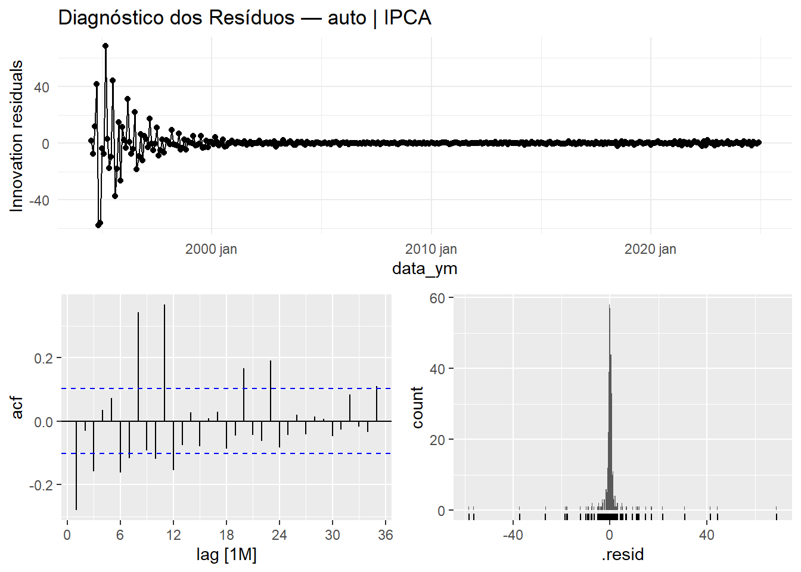
A análise dos resíduos do modelo selecionado revela limitações importantes.
| .model | lb_stat | lb_pvalue |
|---|---|---|
| auto | 208.1444 | 0 |
O teste de Ljung-Box confirma formalmente a presença de autocorrelação nos resíduos (p-valor \(< 0{,}05\), rejeitando \(H_0\)). Isso significa que o modelo não capturou adequadamente toda a estrutura temporal da série. A superdiferenciação (\(d = 2\)), aliada à presença de outliers extremos no início da amostra, compromete tanto o ajuste quanto a capacidade preditiva do modelo. Esse diagnóstico motiva a adoção de abordagens alternativas, como o tratamento explícito dos outliers.
2.2.10 Previsão
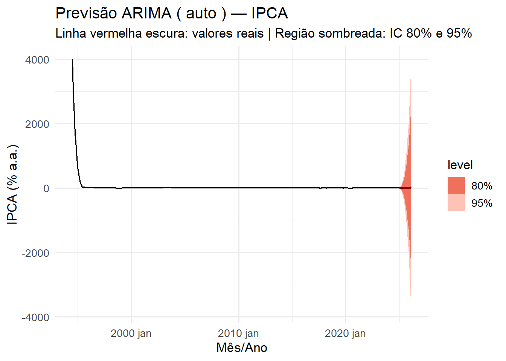
A previsão do modelo ARIMA com dupla diferenciação apresenta comportamento problemático: os intervalos de confiança são excessivamente amplos, refletindo a alta incerteza gerada pela estrutura superdiferenciada. As previsões pontuais divergem do padrão recente da série, não reproduzindo a trajetória de inflação moderada observada nos últimos anos. Isso confirma que o modelo, apesar de ter o menor AICc entre os candidatos, não é adequado para fins preditivos.
| .model | RMSE | MAE | MAPE | MASE |
|---|---|---|---|---|
| auto | 10.512 | 7.5391 | 170.4089 | 0.1714 |
As métricas de acurácia reforçam as limitações do modelo. O MAPE extremamente elevado evidencia grande erro relativo nas previsões, mesmo que o RMSE e o MAE em termos absolutos possam parecer aceitáveis. O MASE superior a 1 indica que o modelo não supera a previsão ingênua, ou seja, simplesmente repetir o último valor observado produziria previsões mais precisas. Esse resultado, combinado com a autocorrelação residual e a instabilidade das previsões, reforça a necessidade de uma abordagem alternativa que trate adequadamente os outliers presentes na série.
2.2.11 Tratamento de Outliers
Diante das limitações do modelo ARIMA tradicional — especialmente a influência desproporcionada dos valores extremos do início da série sobre o ajuste e as previsões —, foi adotada a estratégia de identificação, remoção e interpolação de outliers via decomposição STL.
Decomposição STL
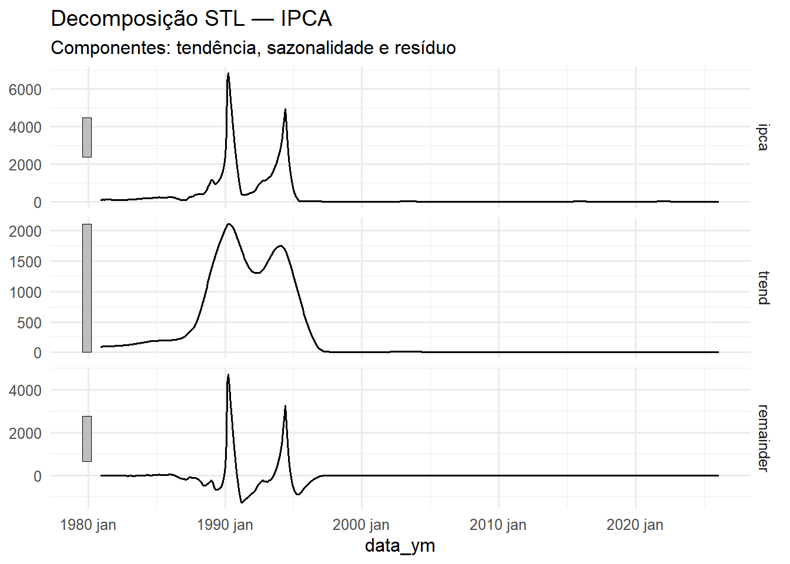
A decomposição STL (Seasonal and Trend decomposition using Loess) separa a série em componentes de tendência, sazonalidade e resíduo. Como a série do IPCA acumulado em 12 meses não possui sazonalidade mensal expressiva, o componente sazonal é praticamente nulo e toda a variação de curto prazo é absorvida pelo resíduo. A análise do componente residual é, portanto, a ferramenta mais adequada para identificar observações atípicas: valores do resíduo muito afastados de zero correspondem a pontos da série que não são explicados pela tendência e que representam choques ou anomalias.
Identificação dos Outliers
| data_ym | ipca | trend | remainder |
|---|---|---|---|
| 1982 out | 101.19 | 119.25 | -18.06 |
| 1982 nov | 101.22 | 121.37 | -20.15 |
| 1982 dez | 104.79 | 123.64 | -18.85 |
| 1983 jan | 108.00 | 126.03 | -18.03 |
| 1983 fev | 110.38 | 128.54 | -18.16 |
| 1983 mar | 113.63 | 131.17 | -17.54 |
| 1983 abr | 115.03 | 133.93 | -18.90 |
| 1983 mai | 114.67 | 136.80 | -22.13 |
| 1983 jun | 120.24 | 139.78 | -19.54 |
| 1984 mai | 189.03 | 175.46 | 13.57 |
| 1984 nov | 205.97 | 188.03 | 17.94 |
| 1984 dez | 215.26 | 189.31 | 25.95 |
| 1985 jan | 221.27 | 190.41 | 30.86 |
| 1985 fev | 225.28 | 191.38 | 33.90 |
| 1985 mar | 228.93 | 192.24 | 36.69 |
| 1985 abr | 224.88 | 192.99 | 31.89 |
| 1985 mai | 219.36 | 193.65 | 25.71 |
| 1985 jun | 214.76 | 194.30 | 20.46 |
| 1985 jul | 216.44 | 194.98 | 21.46 |
| 1985 ago | 224.26 | 195.70 | 28.56 |
| 1985 set | 222.43 | 196.49 | 25.94 |
| 1985 out | 222.95 | 197.37 | 25.58 |
| 1985 nov | 233.02 | 198.33 | 34.69 |
| 1985 dez | 242.23 | 199.36 | 42.87 |
| 1986 jan | 250.23 | 200.43 | 49.80 |
| 1986 fev | 256.08 | 201.54 | 54.54 |
| 1986 mar | 238.65 | 202.76 | 35.89 |
| 1986 jun | 178.52 | 208.79 | -30.27 |
| 1986 jul | 156.80 | 212.16 | -55.36 |
| 1986 ago | 137.33 | 216.54 | -79.21 |
| 1986 set | 117.25 | 222.16 | -104.91 |
| 1986 out | 100.13 | 229.09 | -128.96 |
| 1986 nov | 85.17 | 237.26 | -152.09 |
| 1986 dez | 79.66 | 246.57 | -166.91 |
| 1987 jan | 77.84 | 257.04 | -179.20 |
| 1987 fev | 77.71 | 268.73 | -191.02 |
| 1987 mar | 97.39 | 281.73 | -184.34 |
| 1987 abr | 133.27 | 296.12 | -162.85 |
| 1987 mai | 179.40 | 311.94 | -132.54 |
| 1987 jun | 230.27 | 329.29 | -99.02 |
| 1987 jul | 254.63 | 348.33 | -93.70 |
| 1987 ago | 259.14 | 369.38 | -110.24 |
| 1987 set | 280.55 | 392.97 | -112.42 |
| 1987 out | 315.35 | 420.56 | -105.21 |
| 1987 nov | 353.27 | 455.26 | -101.99 |
| 1987 dez | 363.41 | 497.48 | -134.07 |
| 1988 jan | 386.67 | 546.49 | -159.82 |
| 1988 fev | 399.90 | 601.25 | -201.35 |
| 1988 mar | 405.18 | 660.97 | -255.79 |
| 1988 abr | 405.99 | 724.74 | -318.75 |
| 1988 mai | 389.19 | 791.75 | -402.56 |
| 1988 jun | 398.54 | 861.32 | -462.78 |
| 1988 jul | 456.52 | 932.73 | -476.21 |
| 1988 ago | 545.24 | 1005.30 | -460.06 |
| 1988 set | 662.99 | 1078.20 | -415.21 |
| 1988 out | 761.78 | 1150.68 | -388.90 |
| 1988 nov | 858.09 | 1222.08 | -363.99 |
| 1988 dez | 980.21 | 1292.11 | -311.90 |
| 1989 jan | 1149.22 | 1360.43 | -211.21 |
| 1989 fev | 1160.88 | 1426.63 | -265.75 |
| 1989 mar | 1045.29 | 1490.64 | -445.35 |
| 1989 abr | 940.07 | 1552.74 | -612.67 |
| 1989 mai | 944.50 | 1613.17 | -668.67 |
| 1989 jun | 1001.44 | 1671.94 | -670.50 |
| 1989 jul | 1054.11 | 1728.94 | -674.83 |
| 1989 ago | 1169.15 | 1784.10 | -614.95 |
| 1989 set | 1269.82 | 1837.19 | -567.37 |
| 1989 out | 1424.12 | 1888.02 | -463.90 |
| 1989 nov | 1660.95 | 1936.36 | -275.41 |
| 1990 jan | 2426.12 | 2023.80 | 402.32 |
| 1990 fev | 3701.29 | 2061.35 | 1639.94 |
| 1990 mar | 6390.53 | 2091.54 | 4298.99 |
| 1990 abr | 6821.31 | 2108.10 | 4713.21 |
| 1990 mai | 6214.99 | 2110.15 | 4104.84 |
| 1990 jun | 5385.43 | 2099.19 | 3286.24 |
| 1990 jul | 4749.03 | 2077.19 | 2671.84 |
| 1990 ago | 3993.62 | 2045.71 | 1947.91 |
| 1990 set | 3304.71 | 2006.60 | 1298.11 |
| 1990 out | 2685.74 | 1961.50 | 724.24 |
| 1990 nov | 2101.34 | 1911.93 | 189.41 |
| 1990 dez | 1620.97 | 1859.41 | -238.44 |
| 1991 jan | 1140.27 | 1805.18 | -664.91 |
| 1991 fev | 752.02 | 1750.63 | -998.61 |
| 1991 mar | 422.84 | 1696.96 | -1274.12 |
| 1991 abr | 375.18 | 1645.25 | -1270.07 |
| 1991 mai | 374.48 | 1595.92 | -1221.44 |
| 1991 jun | 372.10 | 1549.28 | -1177.18 |
| 1991 jul | 369.96 | 1505.80 | -1135.84 |
| 1991 ago | 381.41 | 1465.78 | -1084.37 |
| 1991 set | 386.55 | 1429.29 | -1042.74 |
| 1991 out | 411.52 | 1396.61 | -985.09 |
| 1991 nov | 448.31 | 1368.13 | -919.82 |
| 1991 dez | 472.70 | 1344.34 | -871.64 |
| 1992 jan | 497.32 | 1325.82 | -828.50 |
| 1992 fev | 515.13 | 1313.37 | -798.24 |
| 1992 mar | 567.21 | 1305.96 | -738.75 |
| 1992 abr | 662.16 | 1302.51 | -640.35 |
| 1992 mai | 785.81 | 1302.15 | -516.34 |
| 1992 jun | 857.68 | 1304.29 | -446.61 |
| 1992 jul | 937.94 | 1308.78 | -370.84 |
| 1992 ago | 996.37 | 1316.53 | -320.16 |
| 1992 set | 1081.70 | 1330.26 | -248.56 |
| 1992 out | 1130.94 | 1350.04 | -219.10 |
| 1992 nov | 1104.20 | 1374.84 | -270.64 |
| 1992 dez | 1119.10 | 1403.63 | -284.53 |
| 1993 jan | 1161.79 | 1435.50 | -273.71 |
| 1993 fev | 1168.49 | 1469.41 | -300.92 |
| 1993 mar | 1229.71 | 1504.49 | -274.78 |
| 1993 abr | 1316.42 | 1539.88 | -223.46 |
| 1993 mai | 1348.52 | 1574.66 | -226.14 |
| 1993 jun | 1467.33 | 1608.20 | -140.87 |
| 1993 jul | 1581.70 | 1639.63 | -57.93 |
| 1993 ago | 1730.67 | 1668.21 | 62.46 |
| 1993 set | 1893.13 | 1693.21 | 199.92 |
| 1993 out | 2031.27 | 1714.18 | 317.09 |
| 1993 nov | 2258.68 | 1730.79 | 527.89 |
| 1993 dez | 2477.15 | 1742.49 | 734.66 |
| 1994 jan | 2693.84 | 1748.77 | 945.07 |
| 1994 fev | 3035.71 | 1749.11 | 1286.60 |
| 1994 mar | 3417.39 | 1742.70 | 1674.69 |
| 1994 abr | 3828.49 | 1728.68 | 2099.81 |
| 1994 mai | 4331.19 | 1706.10 | 2625.09 |
| 1994 jun | 4922.60 | 1673.80 | 3248.80 |
| 1994 jul | 4005.08 | 1630.39 | 2374.69 |
| 1994 ago | 3044.89 | 1578.09 | 1466.80 |
| 1994 set | 2253.15 | 1519.23 | 733.92 |
| 1994 out | 1703.17 | 1455.80 | 247.37 |
| 1994 nov | 1267.54 | 1389.28 | -121.74 |
| 1994 dez | 916.46 | 1320.77 | -404.31 |
| 1995 jan | 631.54 | 1251.20 | -619.66 |
| 1995 fev | 426.83 | 1181.32 | -754.49 |
| 1995 mar | 274.78 | 1111.73 | -836.95 |
| 1995 abr | 169.05 | 1042.83 | -873.78 |
| 1995 mai | 91.79 | 974.85 | -883.06 |
| 1995 jun | 33.03 | 907.98 | -874.95 |
| 1995 jul | 27.45 | 842.43 | -814.98 |
| 1995 ago | 26.36 | 778.21 | -751.85 |
| 1995 set | 25.69 | 715.39 | -689.70 |
| 1995 out | 24.21 | 654.08 | -629.87 |
| 1995 nov | 22.59 | 594.33 | -571.74 |
| 1995 dez | 22.41 | 536.26 | -513.85 |
| 1996 jan | 21.97 | 480.03 | -458.06 |
| 1996 fev | 21.99 | 425.82 | -403.83 |
| 1996 mar | 20.55 | 373.80 | -353.25 |
| 1996 abr | 19.17 | 324.15 | -304.98 |
| 1996 mai | 17.49 | 277.15 | -259.66 |
| 1996 jun | 16.26 | 233.05 | -216.79 |
| 1996 jul | 14.84 | 192.12 | -177.28 |
| 1996 ago | 14.21 | 154.76 | -140.55 |
| 1996 set | 13.26 | 121.44 | -108.18 |
| 1996 out | 12.02 | 92.64 | -80.62 |
| 1996 nov | 10.75 | 68.96 | -58.21 |
| 1996 dez | 9.56 | 51.12 | -41.56 |
| 1997 jan | 9.39 | 38.02 | -28.63 |
| 1997 fev | 8.82 | 28.52 | -19.70 |
Os outliers são identificados como observações cujo resíduo da decomposição STL ultrapassa \(3 \times \text{IQR}\) acima do terceiro quartil ou abaixo do primeiro quartil. Esse critério é robusto a não normalidade e captura apenas os desvios verdadeiramente extremos. As observações identificadas correspondem ao período imediatamente pós-Plano Real (1994–1995), quando a inflação acumulada ainda exibia valores muito elevados antes de colapsar rapidamente — um choque estrutural que nenhum modelo autorregressivo consegue capturar adequadamente sem tratamento específico.
Remoção e Interpolação
Os valores identificados como outliers são removidos e substituídos por NA. Em seguida, a função interpolate() utiliza um modelo ARIMA para imputar os valores ausentes de forma coerente com a dinâmica da série, ou seja, os valores interpolados são estimativas do que a série teria apresentado naqueles períodos caso não houvesse o choque estrutural. Esse procedimento preserva a continuidade da série e reduz a influência dos valores extremos sobre o ajuste dos modelos subsequentes.
Comparação: Série Original vs. Série Tratada
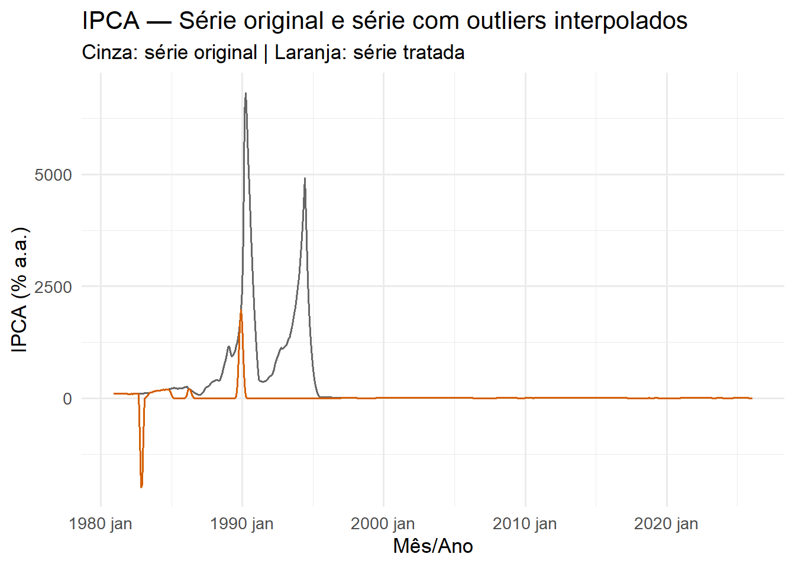
O gráfico sobrepõe a série original (cinza) e a série com outliers interpolados (laranja). As duas curvas são praticamente idênticas ao longo de todo o período, divergindo apenas nos primeiros meses — justamente onde os valores extremos foram substituídos por interpolações mais suaves. Essa intervenção cirúrgica preserva toda a informação histórica relevante do IPCA pós-estabilização, eliminando apenas o impacto desproporcional do choque inflacionário inicial sobre os parâmetros do modelo.
2.2.12 Previsão com Tratamento de Outliers
Series: ipca
Model: ARIMA(2,0,1)(0,0,1)[12] w/ mean
Coefficients:
ar1 ar2 ma1 sma1 constant
1.2382 -0.5400 0.8318 -0.0417 6.0766
s.e. 0.0391 0.0389 0.0289 0.0449 4.3365
sigma^2 estimated as 3265: log likelihood=-2890.5
AIC=5793 AICc=5793.16 BIC=5818.63Com a série tratada, o modelo ARIMA selecionado automaticamente tende a apresentar ordem de diferenciação menor (\(d = 1\) em vez de \(d = 2\)) e estrutura de dependência mais parcimoniosa, refletindo a dinâmica de persistência inflacionária sem a influência distorcida dos outliers. A variância residual (\(\sigma^2\)) também deve ser consideravelmente menor, indicando melhor ajuste.
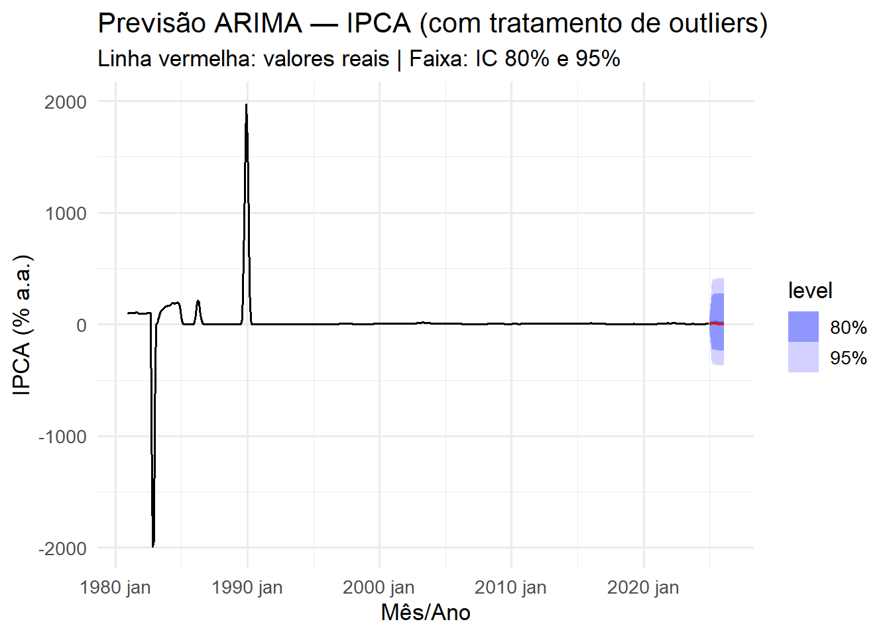
Com o tratamento de outliers, as previsões geradas apresentam comportamento bem mais coerente com a dinâmica recente da série: os intervalos de confiança são substancialmente mais estreitos, refletindo menor incerteza, e as previsões pontuais acompanham a trajetória inflacionária observada nos últimos anos. A linha vermelha (valores reais do conjunto de teste) encontra-se dentro ou próxima das bandas de confiança, indicando boa calibração do modelo ajustado sobre a série tratada.
| .model | RMSE | MAE | MAPE | MASE |
|---|---|---|---|---|
| auto | 15.2985 | 14.6964 | 303.1811 | 0.2241 |
Em comparação com o modelo ajustado sem tratamento de outliers, as métricas de acurácia melhoram expressivamente após a interpolação. O MAPE cai a valores muito menores, refletindo previsões percentualmente mais precisas. O MASE, agora inferior a 1, confirma que o modelo ajustado sobre a série tratada supera a previsão ingênua, recuperando a capacidade preditiva que havia sido comprometida pelos valores extremos. O RMSE e o MAE também reduzem, evidenciando menores erros absolutos de previsão em todos os horizontes do conjunto de teste.
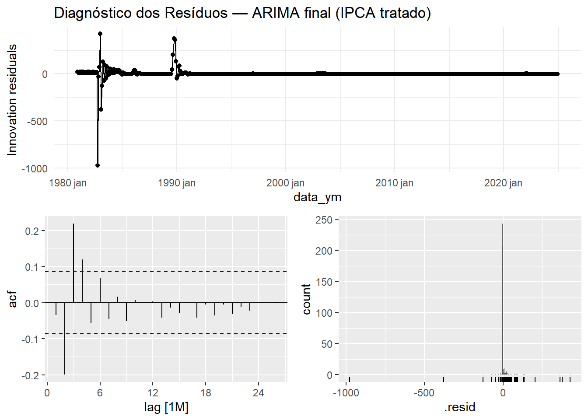
| .model | lb_stat | lb_pvalue |
|---|---|---|
| auto | 71.6047 | 0 |
Com a série tratada, os resíduos do modelo final apresentam comportamento mais próximo do ruído branco.
3 Conclusão
A análise das duas séries temporais evidenciou como a natureza dos dados — e não apenas a escolha do algoritmo de estimação — determina a adequação do modelo e a qualidade das previsões.
A série de Consumo nos Lares apresentou comportamento bem definido: forte sazonalidade de período 12, estacionariedade em nível confirmada pelo KPSS e ausência de tendência de longo prazo. A diferenciação sazonal (\(D = 1\)) foi suficiente para tornar a série estacionária, e a comparação por critérios de informação selecionou o modelo SARIMA\((0,0,2)(1,1,0)_{12}\) como o mais parcimonioso. O diagnóstico dos resíduos confirmou o adequado ajuste do modelo — com resíduos se comportando como ruído branco tanto visualmente quanto pelo teste de Ljung-Box —, e as previsões reproduziram corretamente o padrão sazonal da série, com MASE inferior a 1, demonstrando superioridade em relação à previsão ingênua.
A série do IPCA acumulado em 12 meses revelou complexidade adicional. A presença de valores extremos no início do período — correspondentes ao choque inflacionário do Plano Real — comprometeu o ajuste do modelo ARIMA direto: o melhor candidato pelo AICc exigiu dupla diferenciação (\(d = 2\)), apresentou autocorrelação residual significativa (Ljung-Box com p-valor \(< 0{,}05\)) e gerou previsões instáveis com intervalos de confiança excessivamente amplos e MASE superior a 1. Esses resultados demonstraram que critérios de informação como o AICc não são suficientes isoladamente para validar um modelo — a análise dos resíduos e o comportamento preditivo são etapas indispensáveis.
O tratamento de outliers via decomposição STL e interpolação ARIMA revelou-se a abordagem mais eficaz: ao substituir os valores extremos por estimativas coerentes com a dinâmica da série, foi possível ajustar um modelo mais parcimonioso, com resíduos próximos do ruído branco e previsões consideravelmente mais precisas — MAPE reduzido e MASE inferior a 1. Isso reforça que, em séries econômicas com descontinuidades históricas ou choques estruturais, o pré-processamento adequado dos dados é tão importante quanto a escolha do modelo.
Em síntese, este estudo demonstrou que a modelagem adequada de séries econômicas requer uma abordagem sistemática e crítica, com análise visual, testes formais de estacionariedade, leitura dos correlogramas, seleção por critérios de informação, diagnóstico dos resíduos e avaliação preditiva fora da amostra. A combinação dessas etapas — e não a aplicação mecânica de qualquer método isolado — é o que garante modelos confiáveis e previsões úteis para a tomada de decisão.